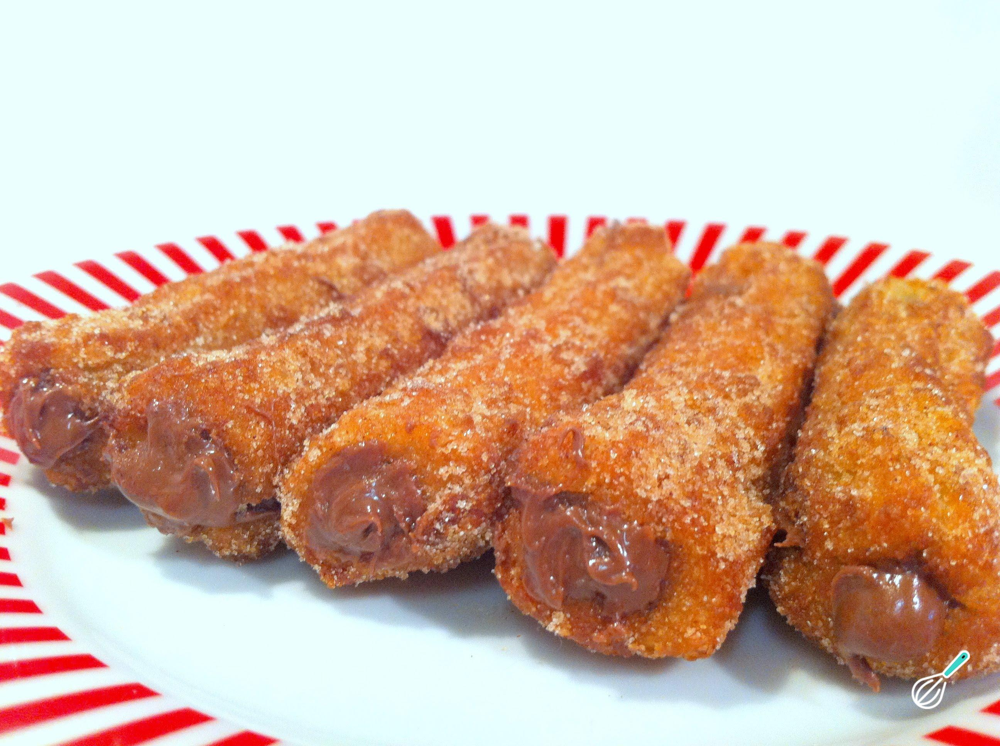

Churros caseiro
Com formato padrão e uma massa sequinha, o Mini Churros Swift é recheado com doce de leite e está pré frito para maior praticidade, basta finalizar o preparo em forno ou Airfreyer. Crocante e saborosa, é uma sobremesa prática e deliciosa, que conquista a todos.
ingredientes
- 250 ml de água
- 300 g de farinha de trigo
- 2 colheres (sopa) de margarina ou manteiga sem sal
- óleo para fritar
- canela (misturar com açúcar para passar os churros depois de fritos)
- 2 colheres (sopa) de açúcar
- 1 pitada de sal (se a margarina tiver sal, dispensar a pitada)
- 3 ovos
- doce de leite
- açucar
Modo de preparo
- Aqueça a água em uma panela, abaixe o fogo e acrescente a margarina e o açúcar.
- Mexa bem, até dissolver toda a margarina.
- Acrescente aos poucos a farinha de trigo, mexendo sempre, até que a massa desprenda da panela.
- Tire do fogo e acrescente os ovos um a um, mexendo bem até misturar toda a massa.
- A seguir, coloque a massa num saco de confeiteiro com o bico em formato de pitanga, ou na forma própria para churros.
- Aperte, já dentro da frigideira com o óleo quente, o tamanho fica a seu critério, corte com a ponta dos dedos ou com uma faca.
- Depois de frito, coloque em papel toalha para que absorva a gordura.
- Em seguida, passe pelo açúcar com canela e recheie com doce de leite usando o bico que já vem junto com a forma.
Doce de Leite-ingredientes
- 1 xícara de chá de margarina
- 2 xícaras de chá de açúcar
- 1 xícara de chá de leite
- 1 xícara de chá de refrigerante de guaraná
- 4 ovos (gemas e claras separadas)
- 2 xícaras de chá de farinha de trigo
- 1 colher de sopa de fermento em pó
- Margarina para untar
- 400 g de doce de leite cremoso
- 1 pacote de chocolate granulado (opcional)
- 1 lata de creme de leite
Modo de preparo
- Na batedeira, bata a margarina com as gemas até obter um creme esbranquiçado.
- Junte o açúcar e bata por mais 5 minutos.
- Adicione a farinha, o leite, bata até ficar homogêneo e transfira para uma tigela.
- Bata as claras em neve e misture, por último o fermento e mexa delicadamente.
- Despeje a massa em uma forma retangular untada e enfarinhada.
- Asse em forno médio, pré-aquecido, por 30 minutos.
- À parte misture o doce de leite com o creme de leite até ficar homogêneo.
- Corte o bolo ao meio, regue com metade do guaraná, distribua a metade do creme.
- Coloque a outra massa, regue com o guaraná restante e cubra com o restante do creme.
- Se quiser jogue chocolate granulado por cima fica ótimo.
